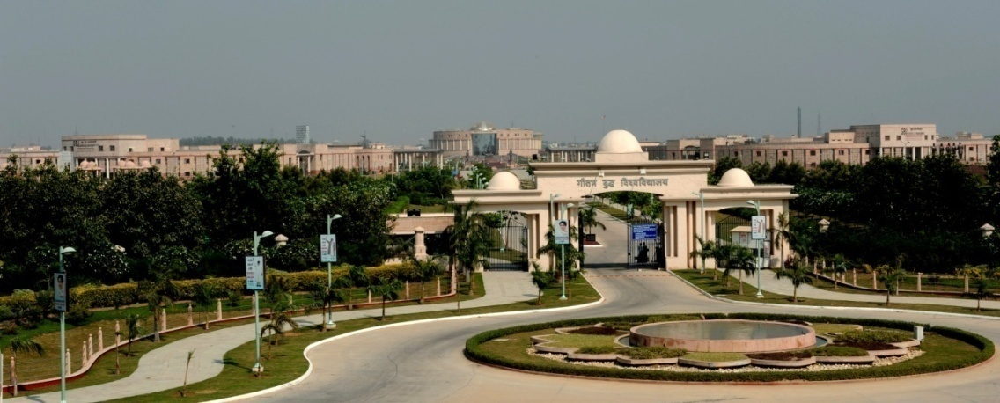
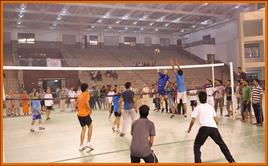
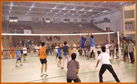

Welcome to GBUBrochure’s documentation!¶
Contents:
About the University¶
Attention
From the Desk of the Vice-Chancellor

I extend a warm welcome to the young aspirants of the academic session 2016-2017 to Gautam Buddha University.
Gautam Buddha University has continuously been working towards developing world-class human resources to meet global challenges in this new world order. The University offers specialized and customized courses in humanities, social sciences, business, physical, chemical and biological sciences, law, agriculture, applied sciences, and engineering and technology. We have tirelessly been working towards a meaningful contribution in developing a sustainable model for growth, consistency, and significant breakthrough in our education system. We have initiated a new model of Enlightened Education to cater to the needs of the transnational and pluricultural world and serve as a center of excellence in education. The academic programmes have been developed in line with the programmes being offered by leading Universities of India and abroad. The University has set in place academic, counselling and overall support services that I urge you all to take a full advantage of. An effective time management and personal discipline?will be keys to your success during your learning journey at the University. Your expectations and hard work will be given shape and directions by our competent faculty members, drawn from institutions of high repute. Our unconditional commitment to quality and your untiring effort will lead to great learning and greater attainment, which definitely places you in the forward league and makes you ready for your stint in the professional world.
I hope that we together set on a new academic journey and discover joy of learning. I look forward to welcoming you at the campus and consequently celebrating with you accomplishments during this journey. Once again I welcome you all to this new world of opportunities at Gautam Buddha University.
1.0 About the University¶
Gautam Buddha University was established under the Uttar Pradesh Gautam Buddha University Act, 2002 U.P. Act No. (9) of 2002, came into existence in the year 2008. The University is funded by the New Okhla Industrial Development Authority (NOIDA) and the Greater Noida Industrial Development Authority (GNIDA), the undertakings of the Government of Uttar Pradesh. The University envisions to become a globally acclaimed integrated academic and research institution that creates a vibrant community of intellectuals and entrepreneurs endowed with Character, Creativity, Competence and Commitment, who can inspire meaningful transformations to ensure holistic growth and development of the society. The mission of the University is to generate a community of scholars who can manage continuity and change; to seek and incorporate the best practices in teaching and learning from around the world; to inculcate in the learners due appreciation for ethical, ecological and economic issues of knowledge; to provide knowledge based scientific solutions to satisfy the need of society and industry; to ensure an academic environment that guarantees avenues for all historically excluded sections of the society. The University is committed to be a world class centre for excellence in education in the next 10 years.
Campus
Gautam Buddha University has 511 acres lush green campus at Greater Noida beside Yamuna Expressway. The fully residential campus is modeled in line with the best institutions of higher learning across the globe. The campus is located in the vicinity of the Greater Noida city centre and is nearly 38 Km from the national capital territory of Delhi. The University comprises of many buildings which include Administrative building, School buildings with auditoriums and conference rooms (08), 18 hostels, Central Library, Mahamaya Shanti Sarovara (a water body spread over one lac sq.fts area), University Auditorium with 3000 seating capacity, Meditation Centre, Sports complexes, University Health Centre, Bank, ATMs, Post Office, Shopping Complex, one Guest house and Convention Centre with accommodation facility. Residences for all faculty and staff range from type II to type VI along with Vice-Chancellor?s residence.
1.1 Basic Facilities:¶
The University has very strong physical infrastructure in terms of its faculty buildings, sports complexes, hostels, gymnasium, play ground, and a well equipped guest house. Good internal roads, gardens, illuminated campus, class-rooms, laboratories and other amenities, well maintained hostel buildings, make the University a proud place for study. A good library facility with well stocked books, journals, magazines, separate reading and reference sections and modern e-resources with free-access to a large number of e-journals and e-books makes it a very important source of learning.
- Hostels
There are 18 Hostels for Boys and Girls on single occupancy basis in the University. All hostels are equipped with facilities like internet connection, Common Room, T.V. Room, medical room/First aid box, visitor?s room, table tennis room, reading room, indoor games room, gymnasium, badminton court, volleyball court, basketball court etc. All the hostels are supported by the solar system which helps in the supply of hot water during winter. There is one hostel for Married Research Scholars Hostel (MRSH, only for full time Ph. D. students). MRSH consists of two room apartments having all necessary infrastructure. Foreign nationals (married or unmarried) admitted students in various programmes of the University will be given priority for MRSH.
- Cafeteria
Apart from above facilities, University has also equipped with three Canteens in different areas including Open Air Theatre, Shopping Complex and School of Management. Tea & Snacks Kiosks are also operated in some of the School buildings viz. School of Management, School of Biotechnology, School of Vocational Studies & Applied Sciences, School of Engineering and School of Information and Communication Technology.
- University Health Centre
University Health Centre is having dispensary with doctors, nurses, indoor facilities with ambulance and free medication for students. It provides; all first aid medicines, first aid dressing, stitching, injection facilities, Nebulization ECG, Pulse-oxymeter, Blood Sugar check-up, Oxygen cylinder, Weighing machine, Wheel chair, 24 hours emergency Ambulance services. University Health Centre has tie-up with Yatharth Wellness Hospital, Greater Noida. Along with Health Centre the same building also runs Clinical Psychology Laboratory & OPD Services like Mental Health Clinic, Child and Adolescent Clinic, Neuro-psychological Clinic, Mental Retardation and Development Pathology Clinic, De-addiction Clinic and Psychosexual Clinic, on specific week-days. Neighbourhood medical facility- Multi-speciality hospital with 500 bed capacity is located in the vicinity of Gautam Buddha University.
- Facilities like banking, post office, book shops, etc.
| S.N. | Establishment Location | Establishment Location |
|---|---|---|
| 1 | Punjab National Bank, GBU Branch | Shopping Complex, GBU |
| 2 | ATM, Punjab National Bank | Shopping Complex, GBU |
| 3 | ATM, IDBI Bank | Shopping Complex, GBU |
| 4 | Post Office | Shopping Complex, GBU |
| 5 | Stationary Shop | Shopping Complex, GBU |
Transport facilities to cater to the needs of the students and staff:
GBU is a residential campus for both students and staff. However, the University bus is also available which provides need based transport facility to staff and students for educational tours, seminars and conferences.
Facilities for differently-abled persons:
With special consideration for differently-abled persons, the University has provisions for 3% reservation in the admissions. For ?Barrier Free Access? the University has constructed ramps at all Schools/departments, administrative building, central library, hostels and shopping complex . There is a facility of lifts at all schools, administrative building, and central library and a separate wash room facility at the school buildings.
1.2 Central Computer Centre:¶
The Central Computer Centre (CCC) caters to the computational needs of the University and provides access to internet resources as well as telecommunication facilities. The Campus network is carefully planned, keeping in mind options for future expansions. Fiber-optic cabling is used to connect all the major buildings. The Campus is equipped with Wi-Fi connectivity. The CCC has strong IT security infrastructure that protects the University network from outside hackers. Most of the servers are using open Source platform. The Campus Network connects to Departments, Schools and Centers. Network Connectivity is also provided to the remote locations which include s Hostels, Institute Hospital, Main Gate, Guest House, etc. In addition to the above, Computer Centre has started Web-based Email System which enables all the users to access their mailbox from anywhere (inside or outside GBU).?? Connectivity is provided over the campus telephone network using ADSL with installed capacity of 900 lines. GBU has a Campus Network with more than 6000 nodes serving more than 3500 users. The LANs in each area of the network have 10/100/1000 Mbps transmission capacity and are linked through fiber optical cables that are laid all over the campus. Campus has taken 1 Gbps leased lines for Internet connectivity from BSNL.?Bandwidth is distributed to the 6000 nodes in the campus with a Cisco switches, Network security is provided with restricted access lists programmed on the routers and Cisco ASA firewall. The Campus provides its students the necessary technology skills to upgrade or share their knowledge. A robust campus network is provided to every student for accessing internal servers and the Internet. It provides the 24?7 support to the entire campus for any Internet/hardware/Network or other IT related problems. It also provides the technical support for all the e-learning class rooms (Projectors, Audio systems etc.).
1.3 Bodhisattva Dr. Bhim Rao Ambedkar Pustakalaya (Central Library):¶
The library, constructed in approximately 1.78 lacs sqft and spread over five storeys supports the University?s mission to contribute to society through its pursuit of education, learning and research at the highest levels of excellence. It is the soul of academic and research activities of the University. It has huge volume of books and e-journals which cover the disciplines of Management, Computer Science, Information Technology, Biotechnology, Humanities, Social Sciences and other related areas. The library is well-equipped with modern facilities, spacious reading halls and compact stack area, 2000-seating capacity reading hall, reference sections, catalogue area, multiple self supporting loaning counters, and is managed by a highly team of professionals. The Central Library is a fully automated library with libsys and RFID systems.
- Library collection
The collection comprises mainly books, theses, reports, current journals, old volumes, specifications, standards, Video Cassirer, CD/DVD databases etc. The present position of the stock of Library is as follows:
| S. No. | Particulars | Quantity |
|---|---|---|
| Books | 60500 | |
| Journals and Magazines | 6377 (International) & 325 (Indian) | |
| Print Journals and Magazines | 60 | |
| Daily Newspapers | 14 | |
| CD/DVD | 2500 | |
| 6 | Project Report | 1000 |
- E-Resources
Apart from the printed resources, it provides online resources like IEEE, Emerald, EBSCO, ECCH online management cases, CMIE (EIS, Prowess) databases and many other e-journals for scholars and students. The Library is member of Indian National Digital Library in Engineering, Sciences and Technology (INDEST) and UGC-Informed consortium. It has subscribed to many e-journals and sources such as Emerald, EBSCO (Business Source Complete), PROWESS, EIS (Economic Intelligence Service) to name a few. The following electronic resources are used at a high frequency by the faculty members, researcher scholars, and students on campus.
| S. No. | E-Resources Name |
|---|---|
| 1. | Science Direct |
| 2. | EBSCO |
| 3. | AIR Online |
| 4. | SCOPUS |
| 5. | DELNET |
1.4 Sports Facilities:¶
The University promotes multi dimensional growth with emphasis on an integrated physical and intellectual training. The Eklavya Sports Complex spread over 58 acres with indoor and outdoor stadium of global standards, equipped with state-of-the art sports facilities is ready to shape health and sports aspirations of the students. It has an Olympic size swimming pool with an additional practice track and a world class gymnasium. Facilities that comprise games functions and sports facilities are given as under:
 

- Playground
The University promotes multi dimensional growth with emphasis on an integrated physical and intellectual training.
The Eklavya Sports Complex equipped with following facilities:
- Swimming Pool with coaches (Swimming (25 X 50 Meter) with
Spectators Arena and Diving Pool with Spectators Arena)
Gymnasium with coaches
Outdoor and Indoor Sports facilities:
| Outdoor Sports | Indoor Sports |
|---|---|
|
|
1.5 Corporate Relations Cell (CRC)¶
CRC acts as an interface between the students, faculty, and the corporate world to initiate continuous interaction with the industry, sharing the industry experiences, and understanding the industry needs. The name of some organizations who visited Gautam Buddha University for placement are: Larsen & Tubro Limited, Cosmic Group, Brentford Services, Enandi, WNS Global Services Pvt. Ltd., Matrix Cellular International Services Pvt. Ltd., S & S Associates, Encyclopaedia Britainica India Pvt. Ltd., Crisil Limited Jeevansathi.com, 99acres.com, RNCOS E-Services Pvt. Ltd., Global Logic, Utpal Solutions Pvt. Ltd., M/s Umbrio Consulting Pvt. Ltd., M/s PropTiger Realty Pvt. Ltd., Tradeindia.com, SCI Group of Companies, T R Sawhney Motors Pvt. Ltd., HomeShop18, Relaxo Footwear Limited, Asteria IT Services, Aakash Institute Study Mate, Ping Telematics Pvt. Ltd, Elcomponics Sales Pvt?Ltd., HDFC Bank Ltd, Edge Executive Search Pvt. Ltd., Carte Blanche Solutions Pvt Ltd, Asbicon Pvt Ltd., Country Club Pvt Ltd., Godrej Infotech, Brick By Brick Propmart Pvt. Ltd., Indus lnd Bank, P C Solutions, DLF Pramerica Life Insurance Co. Ltd., Info Edge India Ltd., HCL Technologies Business Services, ICICI Prudential Life Insurance Co. Ltd., WNS Global Services Pvt. Ltd., Latitude Infratech Pvt. Ltd., IndiaMart InterMesh Ltd., Mercury Solutions Ltd., Myzeal IT Solutions Pvt. Ltd.,?Infosys BPO, Whirlpool of India, Mydala.com. CRC acts as an interface between the students, faculty, and the corporate world to initiate continuous interaction with the industry, sharing the industry experiences, and understanding the industry needs.

- Industry Interface:
In its endeavour to maintain a vibrant & proactive academic industry Interface, the cell invites reputed Industry experts from various industries to interact with its students. Apart from this CRC also organize workshops and seminars with concerned School which enable the students to acquire tremendous sectorial awareness and appreciate application of management theories across different sectors and scenarios.
- Training & Placements:
Corporate Relations Cell has a focused mandate to progressively enhance the synergies between the University & Industry. The cell regularly sending emails to potential organizations, talking to the HR persons on phone and coordinating with concerned School faculty coordinator for student?s resume/data and meeting them regularly to discuss placements.
- Alumni Affairs
CRC maintain the database of Alumni, and resolve their matter related to obtaining degree or any other certificate.
1.6 International Affairs:¶
The University has established an International Affairs Cell and offers a cordial welcome to the International students wishing to join different programmes of the University. The University has created a separate cell to look after the matters related to admission of International Students. The International Students’ Office facilitates all necessary help to International students regarding;
- How to fill application form for admission?
- Course information
- English Remedial Program
- Orientation
- Visa formalities
- Accommodation/Hostels
- Fees and any other issuesT
The Centre coordinates with Indian statutory agencies viz. Indian Council for Cultural Relations (ICCR), Ministry of External Affairs, different embassies and consulates for related various issues including scholarships.
For further details, candidates are advised to visit University website (www.gbu.ac.in) or contact:
The Director, International Affairs Cell
Gautam Buddha University, Greater Noida
Gautam Buddha Nagar- 201312, Uttar Pradesh (India)
Phone: +91-120-2346171/6179 (off), Admission Cell: +91-120-2344244
Fax: +91-1202344215 (Attention Director, International Affairs)
E-mail: directoria@gbu.ac.in, arvinds@gbu.ac.in
1.7 Extra Curricular and Co-Curricular Activities¶
The students of Gautam Buddha University celebrates ABHIVYANJANA (annual cultural event) and SHAURVOTSAVA (annual sports meet) intend to add wings to intellect and imagination of our students. It intends to cultivate creativity among students apart from the University?s core values of excellence. It aims at dissolving the cultural demarcations and facilitating a new School of thought where every student thinks beyond boundaries yet grounded to her/his values. It also provides a platform to the budding professionals and encourages them to think out of the box. The cultural council of the University consists of following clubs:-
- Dramatic Club
- Dance Club
- Music Club
- Debating society/club
- Photography club
- Audio visual education club
- Adventure club
- Art club
- Social Service club
- Hobbies programming
- Robotics club
- Literary club
- SAE GBU college club
About the School of Learning¶
In order to promote value-based education, research and training, the University has established eight schools of studies, which are:
- School of Management
- School of Information and Communication Technology (ICT)
- School of Biotechnology
- School of Engineering
- School of Vocational Studies & Applied sciences
- School of Humanities & Social Sciences
- School of Buddhist Studies & Civilization
- School of Law, Justice & Governance
Each School of studies in the University combines a multilateral confluence of academic training, research, innovation and creativity. The Schools are embodiments of the University?s ever-growing quest for excellence in higher education and research. All the Schools are in synchrony with the essence of our predominant Buddhist Ethics and Practices in the modern context. All the Schools encompass modern fields of studies, high-end technological exposure and a meaningful dissemination of knowledge coupled with practicing wisdom. The uniqueness of the University is acknowledged through the format, content and pedagogy of its programmes and their relevance to the society.
The Schools of Studies were established with the objectives to disseminate knowledge by providing instructional and research facilities in such branches of learning as it may deem fit; to make special provisions for integrated courses in Management, Engineering, Biotechnology and ICT in its educational programmes; to take appropriate measures for promoting innovations in teaching-learning process and inter-disciplinary studies and research; to educate and train manpower for the development of the country and to establish linkages with industries for the promotion of science and technology; and to pay special attention to the improvement of the social and economic conditions and welfare of the people, their intellectual, academic and cultural development.

The academic programmes offered by the University have been recognized by the UGC and by various regulatory bodies /Statutory Councils, whichever are applicable in individual cases viz.
- Recognized by the University Grants Commission of India (UGC); vide F.9-18/2009 (CRP-I) dated 13 May 2009 under section 2(f) of UGC Act 1956.
- Association of Indian Universities Membership; vide Meet/84-AM/2009/289139-73.
- Approved by the Bar Council of India: The School of Law, Justice & Governance (SoLJ&G) offers a five years Integrated BA, LLB programme; vide BCI:D:2074/2014 (LE/Afflin) on 03.12.2014.
- Approved by Rehabilitation Council of India (RCI): The Department of Psychology & Mental Health, School of Humanities & Social Sciences offers M. Phil. (Clinical Psychology), 2 years Programme; vide 17-785/M. Phil. (Cl. Psy.)/14/RCI dated 07 July 2014 for session 2014-15. However for the current academic session it is under process.
- Approved by the Council of Architecture, India: The Department of Architect & Planning, School of Engineering offers 5 years Integrated Dual Degree Programme (B. Arch. + M. Arch./MBA) in Architect and Planning Programme; vide CA/5/Academic-UP35 dated 03 September 2012.
- ISO 9001: 2008 Certification of the University accredited jointly by Joint Accreditation System of Australia & New Zealand (JAS-ANZ); vide 1015QBC26 issued on 21 February 2015.
2.1 SCHOOL OF MANAGEMENT¶
The School of Management (SOM) has been marching on with an integrated focus on exploring and creating new avenues for all passionate aspirants by strategic collaborations with institutions & Individuals, and the enterprises of national and international repute. The School has already shown commitment to internalize the quality standards indicated by the credible bodies. The School has leveraged the flexibility in the curriculum design to mold it according to the fast changing regional and global context. It has been offering some unique courses and programmes, which has been quite popular among students and industry. The five years programme makes possible to cater pool of electives in the areas of Finance, Marketing etc along with multiple summer training opportunities with foreign language during the programme.?The School has state of the art classrooms equipped with computing and multimedia facilities and supported by an extensive library of books, journals, films & databases. The curriculum of all its academic activities has international and cross cultural focus. The School offers specialization in HRM, Marketing, Finance, Operations, Information Technology and Strategy etc. GBU SOM promotes diversity in MBA class by inculcating students from different other Schools of the University, thus encouraging multi-disciplinary learning.
Laboratories:
Computer Labs, Professional Development Lab & Communication Lab
2.2 SCHOOL OF INFORMATION & COMMUNICATION TECHNOLOGY¶
The School of Information and Communication Technology (ICT) has been progressing towards excellence in the field of technical education and research. The School aims to produce competent professionals having strong sense of social responsibilities and become a hub of research and development activities of national and international recognition. The academic programmes, are designed in line with the best Universities around the world, and combine the best practices of pedagogy and class room teaching, complemented by practical training and experiential learning.
Laboratories:
Computer Lab-1, Computer Lab-2 Computer Lab-3 (Windows Operating Systems), Basic Electronics Laboratory, Electronic Circuits Lab, Logic Design Lab, Artificial Intelligence & Robotics Lab, Wireless Technologies Lab, Optical Communication Lab, Analog Communication Lab, VLSI Design Lab, DSP Lab, Microprocessor and interfacing Lab, Microwave & Antenna Lab, Electronics Workshop, Computer Networking Lab, Expert System Lab, Multimedia Technology Lab, Parallel Processing Lab, Advance Digital Communication Lab, Research and Projects Lab, Open Source Software Lab, Embedded System, Image Processing Lab and Computer Vision Lab.
2.3 SCHOOL OF BIOTECHNOLOGY¶
Biotechnology is largely considered as the applied science of the 21st century. Biotechnology sector is one of the fastest growing knowledge-based sectors in India. With numerous comparative advantages in terms of research and development (R&D) facilities, pool of human capital and cost advantage, the biotechnology industry in India has immense potential to emerge as a global key player. The main objective of the School is to improve the education of present and potential workforce in Biotechnology and to bring innovative products for the social good of the globe. The vision of the School is to achieve multi-layer excellence at regional/national and global level in the field of new solutions and manpower development. The School is dedicated to provide quality service through teamwork, partnerships and developing research spirit for the professional strength of community and individual. The faculty members of the School can clearly be distinguished in terms of proven academic engagement, diverse backgrounds, sponsored research (funded by DBT, DST, ICMR, CSIR, etc.) and its impact. The School is an active centre of basic and applied research. The School of Biotechnology has organized a number of Seminars, Conferences, Workshops and Awareness Programmes through the regular lectures by the Expert Faculty and the eminent Guest Lecturers.
Laboratories:
Advance Plant and Animal Tissue Culture Lab, Molecular Biology Lab, Microbiology Lab, Bioprocess and Fermentation Lab, Genomics and Proteomics Lab, Environmental Biotechnology Lab, Advanced Central Instrumentation facility and Bioinformatics Lab for post graduate and doctoral students.
2.4 SCHOOL OF ENGINEERING¶
The School of Engineering has earned recognition for its commitment to excellence from its inception. School of Engineering has become an example of the best in class faculty members, students, competency and discipline. The School has upheld commitment to the liberal skills and aptitudes in all their breadth and depth. The School of Engineering encourages students to expand their talents and skills not only in technical education but also in career enhancement and personality building too. The School also offers numerous leadership opportunities with various technical and professional augmentation establishments viz. the SAE-GBU Collegiate club, GBU-IEEE Student Chapter. A strong technical core forms the foundation for a wealth of integrated master’s degree programs offered through SOE. The School is enriched by Civil Engineering, Electrical Engineering, Mechanical Engineering and Architecture & Regional Planning departments.
- Laboratories:
- Civil Engineering & Architecture: Engineering Graphics Lab, Material Testing Lab, Fluid Mechanics Lab, Surveying Lab I&II, Environmental Engineering Lab, Advance Environmental Engineering Lab, Concrete Lab, Soil Mechanics Lab, Transportation Lab, CAD lab, Remote sensing and GIS lab.
- Electrical Engineering: Electrical Technology Lab, Electrical Machine Lab, MATLAB Programming Lab, Power Systems lab, Switch Gear and Protection Lab, Measurement and Instrumentation Lab, Network Theory Lab, Power Electronics & Drives Lab, Control System Lab, Bio-Medical and Virtual Instrumentation Lab, digital and non linear control Lab. Upcoming Labs: Advance Power Electronics and Drive Lab, Advance Instrumentation and Control Lab.
- Mechanical Engineering: Engineering Workshop, Fluid Mechanics, Fluids Machines, Automobile lab, Machine Dynamics Lab. Manufacturing Technology Lab, Air-conditioning & Refrigeration Lab, Vibration Lab. Upcoming Labs: Meteorology and Instrumentation Lab, Advance Manufacturing Lab-I &II, Advance Design Lab-I &II, Computational Fluid Dynamics Lab, Heat and Mass transfer Lab, Advance thermal Engineering Lab
2.5 SCHOOL OF VOCATIONAL STUDIES & APPLIED SCIENCES¶
The School of Vocational Studies & Applied Sciences (SoVSAS) comprises of primary disciplines of Chemistry, Mathematics and Physics along with two inter disciplinary subjects, Environmental Science, and Food Processing & Technology. All academic programmes of the School lay emphasize on the integration of the existing theoretical knowledge with practical applications. The School, through its academic and research staff, possesses a huge depth and breadth of scientific & technological knowledge. The integrated approach of the School prepares a strong foundation for the future scientists capable of making new discoveries. Drawing together individual expertise and diverse ideas from a variety of fields we enthuse scholars to go for innovative research. The School is successfully running postgraduate and doctoral programmes since 2011. These academic programmes support specialized interdisciplinary fields of teaching, research and industry engagement in polymer chemistry, green chemistry, pharmaceutical chemistry, environmental science, food technology, Photonics & optoelectronics, semi conductor- optoelectronics devices, plasmonics thin films, nanotechnology, computational fluid dynamics & Applied Mathematics. Apart from these courses, the School is all set to offer a wide range of vocational courses of short duration to increase opportunities and human expertise in varied fields of the professional world. School of Vocational Studies and Applied Sciences has been very active in conducting workshops, and organizing national and international conferences and seminars.
Laboratories:
Apart from basic laboratories for undergraduate engineering and science students, the School has advanced labs in all the disciplines for postgraduate / doctoral students.
2.6 SCHOOL OF HUMANITIES & SOCIAL SCIENCES¶
The School of Humanities and Social Sciences is interdisciplinary in approach. It plays the pivotal role of exposing the students to an environment that is conducive to develop understanding of contemporary social issues through inter-relationship of science, technology and management. The School has a unique and distinctive role of hosting creative educational programmes that focus on creating holistic understanding of complexities of life in social context with emphasis on Indian cultural values and Buddhist ethics. The School is committed to provide an interdisciplinary and integrative pedagogical interface to learners so as to nurture them into competent human beings. The academic programmes, designed in line with the best Universities around the world, combine the best practices of pedagogy and class room teaching, complemented by practical training and experiential learning. The School encourages research and focuses on providing its students with an atmosphere for rigorous academic and intellectual development. For the fulfillment of its teaching and research goals, the School has competent faculty members who keep pace with the current developments in their fields of specialization.
- Laboratories:
- Clinical Psychology Laboratory & OPD Services: Mental Health Clinic, Child and Adolescent Clinic, Neuro-psychological Clinic, Mental Retardation and Development Pathology Clinic, De-addiction Clinic and Psychosexual Clinic, on specific week-days.
- Social Work Lab: Social Work Practice Learning Laboratory
2.7 SCHOOL OF BUDDHIST STUDIES & CIVILIZATION¶
The School of Buddhist Studies & Civilization has been established with a vision to produce the erudite scholars and distinguished researchers in the field of Buddhist Studies, in order to develop and cater their knowledge to serve the humanity. The School adopts interdisciplinary and multidimensional approaches with the help of other sciences and social sciences like Archaeology, History, and Philosophy etc. for producing scientific researches. The School is well supported by talented and innovative faculty members, who are striving hard to establish the School as an institution of repute with their pioneer researches, conference participations, and academic endeavours. Their commitment for the School is to encourage scientific inquiry and inquisitiveness among the students as well as academicians. The School offers various academic programmes at Graduate, Post-Graduate and Doctoral level including BA, MA, M. Phil, and Ph. D. From the year (2014) the School has started five year integrated course of B. A. (Hons.) - MA in Buddhist Studies and Civilization programme for the first time in India. These flagship programmes are aimed to train the students to inculcate their expertise and vision for socio-economic, religious, and political development of the World. Our vision is to establish the School of Buddhist Studies and Civilization, Gautam Buddha University as a major research Centre of the world. Keeping pace with the disciplinary advances, the programme would address learning about ethical, psychological, historical, philosophical, economic, transnational, trans-cultural, and linguistic expertise at individual, social, national, and international level. It would facilitate acquisition of specialized knowledge in Buddhist History, Philosophy, and Literature existing in Pali, Sanskrit, Chinese, Burmese, Sinhalese and Tibetan languages and their literature.
The course shall allow students in specialized domains of Buddhist Studies, along with quest for personal growth and citizenship. The objective of the programme is to create strong research oriented foundation in consonance with the recent advances in the field of Buddhist Studies to enable young/budding researchers/scholars to adopt an ethical approach to the programme that combines conceptual and representative practices in both quantitative and qualitative tradition. The programme would provide an opportunity to extend the knowledge and practices with a view to promote healthy interface between academics and society. With a very rich library, a grand meditation centre, a serene campus, the School promises a very productive academic engagement and practice of Buddhist techniques of Vipassana meditation under qualified supervision. In addition to the above, the School provides an ideal forum for cross-cultural and international dialogues, with regular sessions with scholars, conventions, symposia, seminars, conferences, lecture series, etc. It is open to academic collaborations, joint research programmes and faculty & student exchange programmes with academic institutions of repute dedicated to Buddhist Studies. The School has a MoUs with Dhammachai International Research Institute (DIRI), based in New Zealand in June 2013 and MIMC, Leh, Ladakh in 2015.

2.8 SCHOOL OF LAW, JUSTICE & GOVERNANCE¶
Gautam Buddha University-which has been legislatively conceived as ?a centre of excellence?-has started its ambitious multidisciplinary academic programme with the establishment of its School of Law, Justice & Governance in 2011. The School envisions to foster advancement of learning, teaching and research in the fields of law, justice and governance. The main academic programme of the School, the five-year integrated BA LLB, has been running since July 2012. With enrollment of students in the same programme in the academic session 2015-16, the School is treading ahead at fairly good pace. The ongoing programme of the School attempts to strike a right balance between the compulsory subjects prescribed by the Bar Council of India and subjects underscoring the interface between Law, Justice and Governance.
The School aims to blend the theoretical knowledge with practical learning and development of skills and professional attitude through clinical legal education. Keeping this object in mind, the students are guided to participate in moot-court practice, debate, essay writing and project works. With this, the School also aims to provide an opportunity to the students to explore the undiscovered nuances of legal profession and to engage in setting new standards in legal education.

Important
STUDENTS SUPPORT AND PROGRESSION
Each School has an efficient and competent system for student support and mentoring to provide academic, career and emotional counseling to the students. Students are supported through mentoring in academic studies, sports and cultural activities. They are guided for the development of their soft-skills and communication skills. They are counseled to develop professional competitiveness as well as develop ethics, human values, sense of social responsibility and environmental consciousness. Students are encouraged to participate in activities for social and community services. GBU also has a very strong program for counseling, soft skills development, career-path-identification of the students.
The University has facilities for the differently-abled students like ramps and other basic facilities in all Schools/ Hostels and other premises. The University is very sensitive to the issues of gender equality. The University has ?Gender Sensitivity Policy?. Students are encouraged to maintain gender discrimination free environment. Street plays related to this issue are enacted in the campus every year by student cultural groups. Also talks are organized for encouraging students to make campus a safe place for every student irrespective of gender and culture. The University also organizes various sessions to promote women empowerment. The University employs a no tolerance policy for issues related to sexual harassment.

Details of the Programmes and Eligibility Criteria¶
Error
Table Problem
- The candidate appearing in qualifying examination may also apply.
- The candidate appearing in qualifying examination may also apply.
- FT ?Full Time, WP ?Working Professional
- The candidate appearing in qualifying examination may also apply.
3.4 FOR LATERAL ENTRY CANDIDATES* (GPTU 2016)¶
The lateral entry in the University will only be provided in the second year of Integrated Dual Degree Programmes in 5 years technical programmes (B.Tech. - M.Tech /MBA) in the given branches /Schools as per AICTE/UGC norms. The minimum duration of the programme would be accordingly. These candidates would only be allowed to pursue 4 years B.Tech. Degree option, not 5 years Integrated programme. A candidate should have 60% marks (55% for SC/ST) in 3 year diploma after 10th in relevant subject or B.Sc. with Physics/Chemistry/ Mathematics for admission in all branches of engineering; or B.Sc. with Biology subject may also be eligible for admission in Food Technology and Biotechnology Branch, from the recognized body. All the candidates for the following programmes have to appear in GPTU-2016. The seat matrix for these candidates is as under:
| Branch/ Code | Total (94) |
|---|---|
| CE, EE & EC (L01) | 21 |
| FT (L05) | 47 |
| BT (L09) | 26 |
There is an option of exit ONLY in the Integrated dual degree programmes (B. Tech-M. Tech /MBA) of School of Engineering, School of Biotechnology, School of Information and Communication Technology and School of Vocational Studies & Applied Sciences.
Note
- GTPU stands for General Proficiency Test for Undergraduates, GPT stands for General Proficiency Test for Post-graduates, GPTR stands for General Proficiency Test for Research (Abbreviations for the University?s entrance tests). GD & PI Stands for- Group Discussion & Personal Interview; AICTE stands for All India Council for Technical Education; BCI stands for Bar Council of India; In lateral entry programmes, the abbreviations used for the branch/programme are: FT-Food technology, BT-Biotechnology, CE-Civil Engineering, EE- Electrical Engineering, EC-Electronics Engineering.
- Refer section 4.0 for abbreviations used for reservation categories; further M stands for Male and F stands for Female; AV stands for Available; NA stands for Not Available.
- Integrated Dual Degree Programme (B.Tech-M.Tech/MBA) (Programme code U01, U05 & U09) offers two degree options as per the prescribed criterion during the programme i.e. ?Integrated M. Tech? , `Integrated MBA? in 5 years, and `B. Tech? in 4 years for lateral entry only.
- For MBA programme, students will be selected on the basis of written test (GPT-2016) followed by a group discussion and personal interview. For remaining post graduate programmes the admission will be based on the performance in the Written Test /and Personal Interview (GPT-2016) only, as applicable.
- Number of seats indicated above may increase /decrease.
- Qualifying exam only from Govt. recognized International body/national level board (s)/state level board (s) shall be considered for admission in all the programmes.
- The candidate appearing in qualifying examination may also apply.
- Citing improper communication on telephone for justifying the stand would not work for the candidates. The candidates are strongly advised to refer official brochure, website and written communication from the competent official for their queries.
- Entrance test will be common for each branch of B.Tech-M. Tech/MBA and branch will be allotted based on the choice filled during online counseling as per the merit. Online counseling will be for selected programmes only. Follow GBU website for details. Allotment of better choice of branch would only be possible during the offline counseling to be conducted at the University (based on the rank and the branch availability). Candidates are strongly advised to check GBU website for counseling schedules. The Candidate will be solely responsible for reporting late and ignoring the counseling schedule.
- Entrance test will be common for each specialization in MBA and specialization will be given after admission as per criteria decided by the School.
- L01 Branch code applicants will appear in the entrance test for U01 programme code.
- L05 Branch code applicants will appear in the entrance test for U05 programme code.
- L09 Branch code applicants will appear in the entrance test for U09 programme code.
- Some vacant seats are may be considered for branch upgradation after first year of the integrated programme. Hence, branch wise availability of the seats can only be displayed once the Branch upgradation process is complete.
- Entrance test will be common for M. Tech Computer Science and each specialization in M. Tech (ICT) and specialization will be given at the time of counseling as per merit. Programme will be allotted according to the candidates choice filled at the time of the submission of application form. Separate merit list will be prepared for each programme.
- Entrance test will be common for M. Tech in Power System, Instrumentation & Control, Power Electronics and Drive.
- For M. Planning (P01), the weightage of written test would be 70% and Interview would be 30% in final merit of selection.
- The eligibility criterion indicated above is for candidates opting for full time mode of study. For working professional mode, a candidate should have two years of teaching and/or research experience in national institutes of higher learning/Universities/central laboratories, or two years experience in R&D of an industry at appropriate level.
- The Ph.D. scholar in the working professional mode is required to be a full time scholar for one year in first year while doing course work.
- Gautam Buddha University recognizes CA & CS qualifications (attained only with graduation degree) as equivalent for post graduation, for the purpose of admission in Ph.D. programme in the relevant area at School of Management
- The selection to the programme shall be provisional until the candidate furnishes all required documents, fee and testimonials including final results of the qualifying examination.
- The candidate should have completed all the requirements (theory/practical, and viva- voce) of the award of qualifying examination before the commencement of the session. Result awaiting candidates should not have any back papers in previous years. They would take admission solely on their risk. It is mandatory for all such candidates to submit the final results of the qualifying examination latest by 31:sup:`st` October 2016. Failing which, their provisional admission will be automatically cancelled and they may not be allowed to appear in the University examinations.
Admission Related Information¶
4.0 Reservation/Relaxation Policy:¶
- The reservation and relaxation policy for SC/ST/OBC candidates is as per the Uttar Pradesh Government rules and Gautam Buddha University rules.
- The sports person providing evidence of participation in National/International level events may be provided 5% relaxation in respective qualifying examination.
5.0 Fee Structure¶
The present fee structure is as follows:
Academic Fee per academic session for:
MBA Programme Rs. 1,95,000/-
- Tech and M. Plan Programme Rs. 95,000/-
Other MA Programme Rs. 10,000/-
MA (Mass Communication) Rs. 24,000/-
MSW (Master in Social Work) Rs. 24,000/-
Master in Disability Rehabilitation Rs. 24,000/-
and Administration (MDRA)
Master in Public Policy and Governance Rs. 10,000/-
- Sc./B. Voc./M. Sc. Programme Rs. 10,000/-
- Phil Programme Rs. 24,000/-
BA, LLB Programme Rs. 85,000/-
BBM-MBA Rs. 95,000/-
B.A. (Hons.)-MA Rs. 12,000/-
Integ. Dual Degree Prog./ B. Arch Rs. 95,000/-
Ph.D. Programmes (All Schools) Rs. 15,000 /-
In addition to the above fee:
- Hostel Charges per academic year will be Rs 30,000/- Per Annum**
- Food Charges per academic year will be Rs. 25500/- Per Annum
- One time Registration Fee will be Rs. 10,000/- (Non Refundable)
- Security Deposit Rs. 10000/- (Refundable)
Note
- Registration fee is not the part of academic fee. Relaxation to SC/ST in the fee is as per UP govt. norms.
- Hostel accommodation is mandatory for all technical programmes.
- Hostel accommodation is optional for BA?MA / B.Sc./M.Sc./ MA/MSW/ MA (MC) programmes.
POLICY FOR REFUND OF FEE:
Voluntary withdrawal from the programme:
- If a student decides to leave within three weeks of the Registration of the programme, fee amount paid (excluding registration) will be refunded after deduction of 20% of total fee.
- No refund will be made, under any circumstances, after the commencement of classes.
- The Hostel charges will be refunded after deducting the amount calculated on pro rata basis.
6.0 Application Procedure - How to Apply¶
Online submission: On-line application form and admission brochure is available on University website: GBU’s Official Website
Application fee is to be submitted through Credit Card/Debit Card/Net Banking/Demand Draft.
| Category | Application fee/programme |
|---|---|
| General/OBC | Rs. 1200 |
| SC/ST (U.P.) | Rs. 600 |
- Candidate must send a copy of the completed application form on the below given address.
- Ph.D. applicants would be required to submit a Tentative Research Proposal in approx. 500 words as per the given area of research. In the title page of the Ph.D. proposal, the discipline and the mode of admission (Full Time/Working professional) should be specified. They may also submit the list of publications or other research credentials (if any).
- The Ph.D. applicants (in working professional mode) are also required to produce a letter of consent from the current employer for providing sufficient facilities and time as required by the University for conducting the research work (only at the time of interview for Ph.D. programme).
- A self attested copy of NATA score (not older than 2 years on the last date of the application form submission, for B.Arch applicants).
The duly signed printout of the completed application form for GPTU-2016 (Integrated Dual Degree Programme B.Tech-M.Tech/MBA (Engg., Biotechnology., Food Processing & Technology), BBA-MBA; BA LLB; B.A. (Hons.)-MA, and all lateral entry programmes); GPT-2016 [For all M.Tech, MBA, M.Phil (Clinical Psychology), Master in Disability Rehabilitation and Administration (MDRA)]; GPTR-2016 for all Ph.D. programmes along with required documents should reach latest by April 5:sup:`th`, 2016. For GPT-2016 (For MA/M.Sc./M.Phil (Buddhist Studies)/ B.Arch, the duly signed printout of the completed application form should reach latest by July 16:sup:`th`, 2016. For Under Graduate/Post Graduate/Doctoral Degree Programmes, please mention ?Application for Under Graduate/Post Graduate/Doctoral Programme (GPTU/GPT/GPTR-2016) on the right top corner of the envelope. Candidate must send the signed printed copy of the filled online application form along with relevant documents to the address given below:
Important
To
The Admission Office
Gautam Buddha University, Near Yamuna Express way,
Greater Noida, Distt. G. B. Nagar, U.P., Pin-201312

7.0 Centres for Entrance Test¶
Attention
(Not applicable for MA/M.Sc./M. Phil (Buddhist), B. Arch, B.A.(Hons.) -MA/ B. Sc. & B. Voc.)
The GPTU-2016, GPT-2016 and GPTR-2016 will be held at following centres. Candidates are advised to give three choices of test centres. The centre may be relocated if the required number of students fails to opt for a particular centre in a specific test. Request of any change in the choice for test centre shall not be entertained under any circumstance.
| Written Examination Centre | Centre Code | Written Examination Centre | Centre Code |
|---|---|---|---|
| Greater Noida (GBU) | 01 | Ranchi | 12 |
| Noida | 02 | Patna | 13 |
| Ghaziabad | 03 | Guwahati | 14 |
| Lucknow | 04 | Hyderabad | 15 |
| Gorakhpur | 05 | Jaipur | 16 |
| Varanasi | 06 | Kanpur | 17 |
| North Delhi | 07 | Bareilly | 18 |
| South Delhi | 08 | Udaipur | 19 |
| Gwalior | 09 | Shillong | 20 |
| Chandigarh | 10 | Jamshedpur | 21 |
| Dehradun | 11 | Pathankot | 22 |
Syllabus¶
Error
Table problem
8.0 Syllabus/Schedule For The Entrance Test¶
8.3 GPTR - For Doctoral Candidates¶
The question paper will comprise 100 Marks. This has further division in three sections as following:
| Subject | Marks | Entrance test Schedule |
|---|---|---|
| Research Methodology and General Awareness | 15 Marks | April 24, 2016 (3:00 PM- 5:00 PM) (For all the Ph.D. programmes of various disciplines) |
| English Proficiency | 15 Marks | |
| Subject Awareness | 70 Marks | |
| Total Marks | 100 Marks |
- For the details about the main topics to be covered for the different
discipline, refer admission link of the GBU website.*
Important Instructions/Dates¶
9.0 Important Instructions¶
- The incomplete/wrongly filled online application shall be rejected.
- All applicants will get all information through University website (www.gbu.ac.in). A candidate would be responsible for not visiting GBU website for required details.
- The result of admission to the programme, declared by University shall be final and binding.
- The counseling or interview may start for admission in the University Campus only according to the rank in GPTU/GPT/GPTR -2016.
- Candidates are also advised to keep updating their email address and phone number for all important communications. A candidate would be responsible for not seeing his given email box/message box of the mobile regarding relevant details.
- The candidate must download their admit card from the University website: www.gbu.ac.in during 10th April, 2016 onwards and take the admit card to the examination centre with a copy of latest passport size photograph.
- Any plea that a candidate failed to receive in-person information for appearing in GPTU-2016/GPT-2016/GPTR-2016 will not be accepted as a ground for the refund of fee or other redressal.
- Gautam Buddha University may withdraw the provisional registration or permission to appear in GPTU-2016/GPT-2016/GPTR-2016 granted by mistake/false information to a candidate, at any stage of the admission process.
- Issuance of admit card doesn’t ensure the eligibility of the programme
- Number of seats may increase or decrease in each programme.
- Since successful candidates are required to produce the admit card at the time of admission, it should be carefully preserved until the admission process is completed.
- The duplicate admit cards shall be issued to the candidate a day before the entrance test from 10:00 a.m. to 12:30 p.m. at the prescribed examination centre. Candidates are required to bring two passport size photographs, similar to that uploaded/pasted on application form and identity proof of the candidate.
- For more information please visit website www.gbu.ac.in or contact at 120-2344234.
- The University only accepts the prescribed fee. A candidate is required to contact his/her own banker for the refund of the fee payment which is debited in excess during the online transaction. The University would not entertain the queries for refund amount which is in passage and not credited in University?s accounts.
Warning
Disclaimer: The admission brochure is prepared with due diligence. However, the final source of the rules would be the act, statute and ordinances of the Gautam Buddha University. And its interpretation power would vest in the competent authority of the University.
10.0 Important dates (tentative)¶
| S. No. | Events | Dates |
|---|---|---|
| 1 | Last date for application form submissions for GPTU-2016 (Integrated/Dual Degree Programme B. Tech. +M. Tech. / MBA (Engg., Biotechnology., Food Processing & Technology) BBA-MBA; BA LLB and all lateral entry programmes), GPT-2016 [For all M.Tech, M.Plan, MBA, M.Phil (Clinical Psychology), MDDR] GPTR-2016 for all Ph.D. programmes (Both Written test exempted and non-exempted category) | 31:sup:`st` March 2016 |
| 2 | The Online download of Admit Card for Written test | 10:sup:`th` April 2016 onwards |
| 3 | Entrance Examination for GPTU, GPT, GPTR - 2016 | 24:sup:`th` April 2016 |
| 4 | Announcement of results of GPTU, GPT, GPTR- 2016 | 25:sup:`rd` May 2016 |
| 5 | Online Counseling for locking branch choice, wherever applicable | 27:sup:`th` ? 31:sup:`st` May 2016 |
| 6 | GD & PI for MBA Programme (s) | 30:sup:`th` ? 31:sup:`st` May 2016 |
| 7 | Declaration of Final Result of MBA programme | 4:sup:`th` June 2016 |
| 8 | Last date for application form submission for MA/M.Sc./BA (Hons.)-MA/B. Sc./B. Voc. / B.Arch programmes | 11:sup:`th` July 2016 |
| 9 | Declaration of Merit List for MA/M.Sc./BA (Hons.)-MA/B. Sc./B. Voc. programmes | 18:sup:`th` July 2016 |
| Important Phone Numbers | |
|---|---|
Reception Admission Cell |
0120-2344200 0120-2344234/47 |
| Fax | 0120-234 4215 |
| Coordinator, Admission Committee | 0120-2344244 |
| Chief Proctor | 0120-2346177 |
| Chief Warden (Male and Female) | 0120-2346175 |